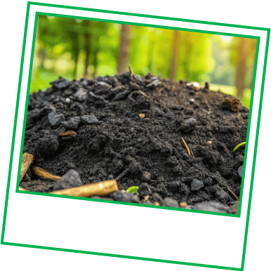
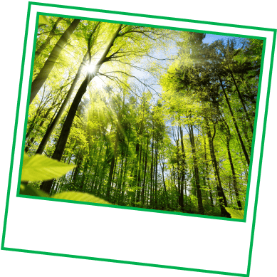

Turn your small change into big changes for the planet
When you opt in to our Green Programme
Every $0.10 you contribute to Grab rides or orders goes
towards projects that help Mother Nature
Got 2 minutes?
Swipe to check the
projects that you’ll
be supporting.
Did you know?
Bangkok’s air was unsafe to breathe for 200 days last year.
Your support for the
Biochar Life programme
allows us to use charcoal to fight this (no, really). How? By
turning unwanted crops into
biochar.

Biochar absorbs harmful carbon emissions & helps fertilise crops
This contribution also goes to support another local Bamboo
Biochar Project for a healthier, more sustainable future. Go,
biochar!
Did you know?
There’s a type of tree that makes furnitures which symbolise wealth.
lt’s the critically endangered
Thai Rosewood,
one of the native tree species which the
GrabForGood Forest
is replanting in
Krabi.

Thai rosewood is so rare, it can go up to over US$23,000 a tonne
Your $0.10 allows us to work with
EcoMatcher
and
Conserve National Forest
to restore the biodiversities of the forests there.

And the journey doesn’t end there.
Your 10-cent also travels over 500KM to protect the
Keo Selma Wildlife Santuary, h
ome to 75 threatened species in Cambodia, from
deforestation.
See how this small change adds up to all these changes
Since 2021, they’ve been helping to conserve forests in Southeast
Asia.

Over 1.2 million trees
have been planted, woo!
But that doesn’t stop here, because Mother Nature could always use a
little more love.